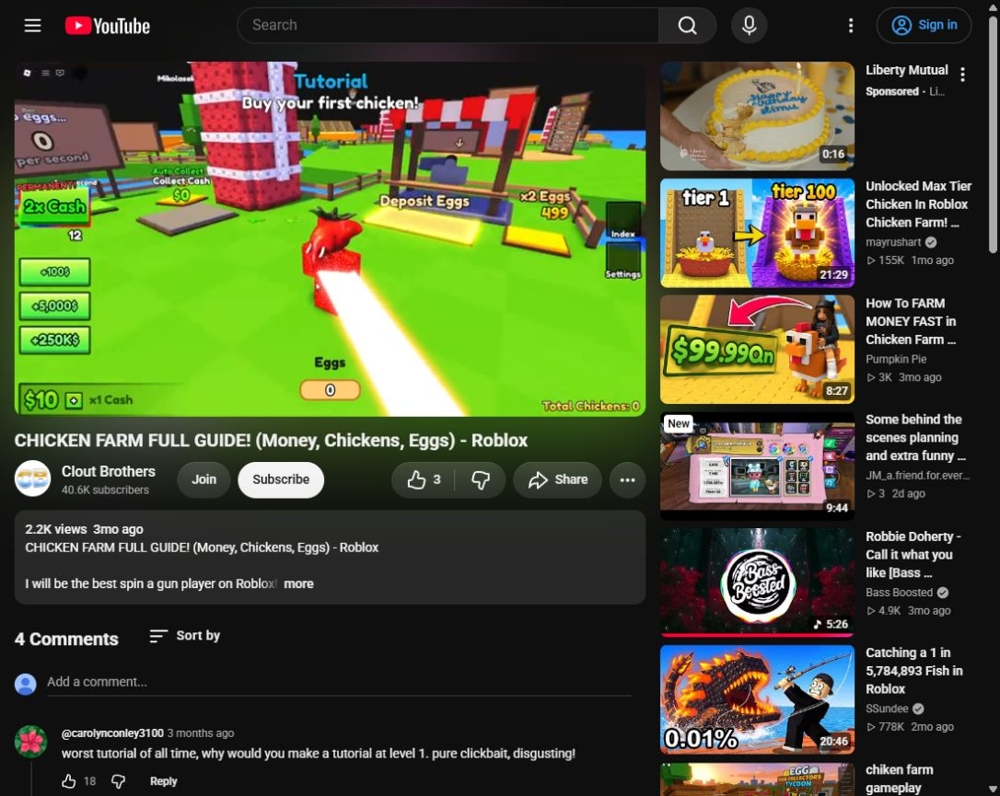

01 / GUIDANCE00:05 ↗

VIDEO DETAIL · ORIGINAL LINKEDMake the destination obvious
The striped deposit stall, bright yellow pad and large downward arrow make the selling destination easy to find. A luminous route starts beside the player.
CURRENT
The current plot uses a striped Brainrot merchant stall, a highlighted Mini deposit pad and ground chevrons.
LIMIT
Open untouched full screenshot ↗The supplied after-image shows the route and stall; walking and deposit timing need separate playtesting.